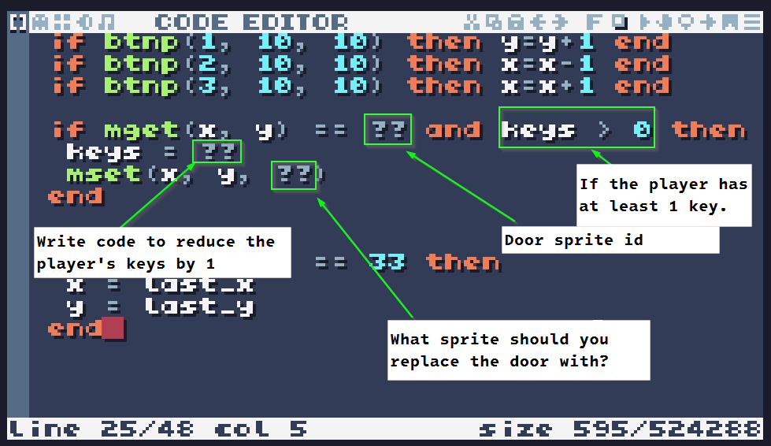

Locked Door Challenge
Return to Challenge Description
Part 3: Unlocking Doors
In this challenge, you will add code that checks if the player has a key when they walk into a door. If they do, the door will be removed and the number of keys they are carrying will be reduced by 1.
Requirements
- When a player steps on a wall tile:
- If they have 0 keys, display the door is locked and stop their movement
-
If they have at least 1 key
- Remove the door from the map
- Reduce the keys the player is carrying by 1
- Display a message stating the player unlocks the door
Note: Your message should be specific to your game. Feel free to adjust the message to meet your theme.
When you have completed it, your project should work similar to the one below:
Hints
Updating Door Condition
In your current project, you have an if statement in
your code that prevents the player from moving through the door.
You can add multiple conditions to an if statement using the and
keyword. The code below shows an if statement that checks if
the player is touching a door AND has 0 keys. Can you update
your code to do the same? If you're successful, you should be able to move
through doors if you have at least 1 key.
Opening Doors
Next, you need to add code to your game that checks if the player
has at least 1 key. This can be done using the greater than
operator. More specifically you can use the code: keys >
0 which will be true if the keys variable
is greater than 0.
The code below is incomplete. Can you finish it?
What's Next:
If all went well, you are now able to add doors and keys inside of your maze! Using these techniques, you could design a variety of additional elements for your game. Feel free to come up with your own ideas or, if you would like, you can use one or more of the ideas below:
- Add an Exit: Add a tile to the game that, when it is reached displays the message "You win!"
-
Button/Switches: When the player steps on a button, use
msetto change the map. This could be used to create secret hallways, reveal keys, or even add traps to the maze! - Portals: When a players steps on a portal, they are teleported to another part of the map!
- Timer: Add a count down timer to the game that is displayed at the top of the screen. When the timer reaches 0, display a "Game Over" message.